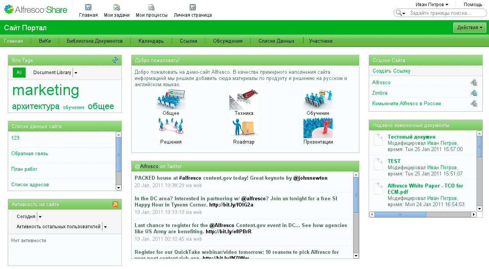

Система Alfresco уже достаточно известна в России, но большинство обзоров на русском языке являются исключительно маркетинговыми, хороших технических статьей пока мало. Поэтому хотелось бы восполнить пробел и рассказать о практическом применении платформы Alfresco
Что такое Alfresco?
Alfresco – это система управления корпоративным контентом (Enterprise Content Management, ECM). Термин ECM встречается достаточно часто, но вот на русский язык его перевести непросто, потому часто возникают разные трактовки и смешение под общим названием совершенно различных систем. Попробуем разобраться.
Под «контентом» в данном случае подразумевается любой вид информации, которую требуется хранить и систематизировать: документы, видео, аудио, картинки и т.д. «Управление» в терминах Alfresco – это наличие не только хранилища контента с возможностью создания архива, но и ориентированность системы на бизнес-процессы, которые с этим контентом связаны. За словом «корпоративый» скрывается в первую очередь возможность легкой интеграции с другими системами, которые уже используются в организации.
Всю платформу Alfresco можно разделить на несколько основных компонентов:
Существуют версии продукта – Alfresco Community и Alfresco Enterprise. Технические возможности версий не отличаются, но сборки Community распространяются абсолютно свободно и без какой-либо поддержки, а Enterprise-версия ориентирована на корпоративное использование и приобретается вместе с официальной поддержкой от разработчиков.
Более подробное описание можно найти на официальном сайте Alfresco [1].
Что мы получаем «из коробки»?
Первое, с чем приходится иметь дело в организации, – это электронное хранение документов. Alfresco обеспечивает возможность работы с репозиторием с помощью веб-интерфейса, а также по протоколам FTP и SMB/CIFS. При этом поддерживается версионность данных: всегда можно посмотреть историю изменений конкретного документа и откатиться до нужной версии. Документы можно разбить на категории с помощью тегов. Интересной особенностью является наличие полнотекстового поиска с учетом русской морфологии – это позволяет искать документы по их содержимому.
Интерфейс Alfresco Share предоставляет возможность совместной работы людей над проектами, для этого используются сайты. Для каждого проекта можно выделить сайт, на который пригласить пользователей, каждому из них назначить определенную роль: администратор, редактор, обычный участник.
Стандартные компоненты позволяют организовать в рамках сайта библиотеку документов и совместную работу над ними, внутренние дискуссии, трансляцию тематических новостей, вести общий календарь и списки данных. Интерфейс и функционал сайта могут быть легко настроены с помощью расширений – в терминологии Alfresco они называются дашлеты.
Вот так может выглядеть созданный сайт (см. рис. 1).

Рисунок 1. Сайт, созданный с помощью Alfresco
С задачей электронного хранения документов тесно связана задача организации документооборота: для ее решения Alfresco предлагает движок управления бизнес-процессами (workflow). В стандартной установке присутствует около 10 процессов, которые позволяют ознакомиться с возможностями документооборота.
Alfresco – это платформа
Говоря об Alfresco, стоит иметь в виду одну важную деталь – это в первую очередь платформа, а не коробочный продукт. «Из коробки» мы получаем лишь базовый функционал. Основное преимущество Alfresco – простое расширение и быстрое создание на ее базе своих решений. Рассмотрим подробнее некоторые интересные вещи, которые можно достаточно легко реализовать с помощью Alfresco.
В первую очередь стоит отметить очень гибкую модель контента, которая используется в системе. Под моделью контента в данном случае подразумевается набор метаданных, которые можно ассоциировать с конкретным документом. С помощью метаданных легко организовать связь между документами. К примеру, если один документ является логическим следствием нескольких других, можно это явно указать в метаданных. Очевидно, что документы могут иметь некоторый набор метаданных, который является одинаковым в пределах определенного класса документов. Это очень легко реализуется благодаря механизму наследования пользовательских типов.
С моделями контента тесно связана разработка бизнес-процессов. Применение стандартных процессов весьма ограничено в реальной жизни, они все-таки предназначены для ознакомления. Alfresco дает возможность создавать свои процессы под требования конкретной организации. Для задания своего процесса необходимо создать несколько XML-файлов описания. Эту процедуру можно слегка упростить, если использовать средство для графического дизайна jBPM Graphical Process Designer. Он позволяет нарисовать процесс графически, но от полной необходимости редактировать файлы вручную все равно не избавляет. Более подробно о создании процесса можно почитать здесь [2].
Другой немаловажной особенностью системы с точки зрения разработчика является наличие большого числа доступных API (RESTful API [3], Java API [4], JavaScript API [5]), с помощью которых легко получить доступ к репозиторию, задачам, системе управления сайтами и т.д. Более того, Alfresco дает возможность писать пользовательские веб-скрипты, которые расширяют функциональность стандартных. К примеру, можно легко написать скрипт, позволяющий загружать файлы в репозиторий и запускать бизнес-процессы автоматически. Наличие открытого API дает возможность интегрировать систему в инфраструктуру предприятия с минимальными затратами на написание кода.
* * *
Alfresco является перспективным и активно развивающимся продуктом, который популярен в Европе и Америке, он стремительно завоевывает и российский рынок. Основные преимущества Alfresco – открытость системы и наличие обширного API, что делает ее очень привлекательной платформой для построения решений для организаций самого разного размера. Если Alfresco вам интересна, загрузить дистрибутив можно с официального сайта [6], а обсудить возникающие вопросы или поделиться опытом – в русскоязычном сообществе [7].